무선설비기사 (2019-03-09 기출문제)
1과목: 디지털 전자회로
1. 다음 중 정전압 회로에 대한 설명으로 옳은 것은?
- 입력신호의 에너지를 증가시켜 출력 측에 큰 에너지의 변화로 출력하는 회로
- 교류전압을 사용하기 적당한 직류전압으로 변환하여 주는 회로
- 출력 내에 포함되어 있는 리플성분을 제거시켜 일정한 크기의 전압을 유지시키는 회로
- 입력전압, 출력부하 전류 및 온도에 상관없이 일정한 직류 출력 전압을 제공하는 회로
(정답률: 69%)

2. 바이어스(Bias) 전압에 따라 정전 용량이 달라지는 다이오드는?
- 제너(Zener) 다이오드
- 포토(Photo) 다이오드
- 바렉터(Varactor) 다이오드
- 터널(Tunnel) 다이오드
(정답률: 80%)
3. 다음 정전압 회로에서 출력전압(Vo)으로 맞는 것은? (단, VZ=Vf 이다.)
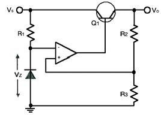
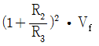
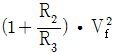
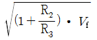
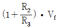
(정답률: 73%)
4. 궤환을 걸지 않았을 때 전압 이득이 30이고 고역 차단 주파수가 20[kHz]인 증폭기에 궤환을 걸어 전압 이득이 20으로 되었다면, 궤환 시의 고역 차단 주파수는?
- 10[kHz]
- 20[kHz]
- 30[kHz]
- 40[kHz]
(정답률: 68%)
5. 다음 회로에서의 출력 파형으로 옳은 것은?
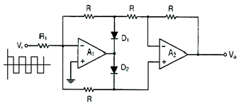
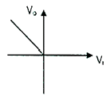
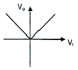
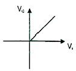
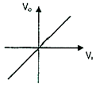
(정답률: 77%)
6. 다음 연산증폭기에서 R1=R2=100[kΩ]이고, Rf=25[kΩ], V1=2[V], V2=4[V] 일 때 출력전압 Vo는?
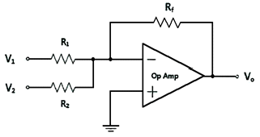
- -1.3[V]
- -1.5[V]
- -1.7[V]
- -2.0[V]
(정답률: 74%)
7. 다음은 BJT 증폭기 회로를 나타내었다. 커패시터 CE를 사용한 목적으로 적절한 것은?
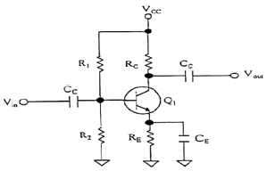
- 증폭기의 이득을 증가시킨다.
- 리플성분을 감소시킨다.
- 직류성분을 통과시킨다.
- 병렬궤환을 발생한다.
(정답률: 61%)
8. 다음 그림과 같은 회로에서 결합계수 0.5이고, 발진주파수가 200[kHz]일 경우 C의 값은 얼마인가? (단, π=3.14 이고, L1=L2=1[mH]로 가정한다.)
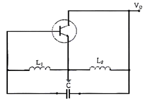
- 211.3[uF]
- 211.3[pF]
- 422.6[uF]
- 422.6[pF]
(정답률: 71%)
9. 다음 중 RC 궤환발진기의 종류 중 빈 브리지(Wien Bridge) 발진기에 관한 설명으로 옳은 것은?
- 3단으로 구성된 위상 선행회로를 궤환으로 사용하고, 기본 증폭기로는 페루프 전압이득이 29인 반전증폭기를 사용하는 발진기이다.
- 발진기에서 발생되는 발진주파수는
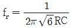
이다. - 회로에서 발진이 일어나기 위해서는 정궤환 루프의 위상천이가 0° 이고 루프이득이 0 이어야 한다.
- 사인파 발진기의 일종으로 지상-진상회로로 구성되며, 발진에 필요한 증폭기 이득은 3이다.
(정답률: 46%)
10. 발진회로와 증폭회로의 설명으로 틀린 것은?
- 발진회로와 증폭회로는 적절한 직류전원이 공급되어야 한다.
- 발진회로와 증폭회로 모두 적절한 궤환회로를 적용할 수 있다.
- 발진회로와 증폭회로는 출력파형에 왜곡이 발생할 수 있다.
- 발진회로와 증폭회로는 외부에서 입력되는 교류신호가 필요하다.
(정답률: 71%)
11. 다음 중 정보 전송에서 반송파로 사용되는 정현파의 위상에 정보를 싣는 변조 방식은?
- PSK
- FSK
- PCM
- ASK
(정답률: 82%)
12. 다음 중 AM방식과 비교한 FM방식에 대한 설명으로 틀린 것은?
- 단파 대역에 적당하지 않다.
- 수신의 충실도를 향상시킬 수 있다.
- 잡음을 보다 감소시킬 수 있다.
- 피변조파의 점유주파수대역이 좁아진다.
(정답률: 72%)
13. 다음 중 아날로그 신호로부터 디지털 부호를 얻는 방법이 아닌 것은?
- PM(Phase Modulation)
- DM(Delta Modulation)
- PCM(Pulse Modulation)
- DPCM(Differential Pulse Code Modulation)
(정답률: 62%)
14. 일정시간 동안 200개의 비트가 전송되고, 전송된 비트 중 15개의 비트에 오류가 발생하면 비트 에러율(BER)은?
- 7.5[%]
- 15[%]
- 30[%]
- 40.5[%]
(정답률: 85%)
15. 다음 중 높은 주파수 성분에 공진하기 때문에 생기는 펄스 상승부분의 진동 정도를 무엇이라 하는가?
- 새그(Sag)
- 링잉(Ringing)
- 언더슈트(Undershoot)
- 오버슈트(Overshoot)
(정답률: 77%)
16. 그림과 같은 회로의 전달 특징은? (단, VR1 ＜ VR2)
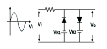
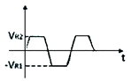
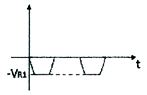
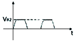
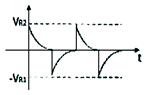
(정답률: 80%)
17. 다음 회로에서 정논리의 경우 게이트 명칭은?
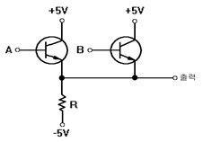
- AND 게이트
- OR 게이트
- NAND 게이트
- NOR 게이트
(정답률: 75%)
18. 2진수 1110을 2의 보수로 변환한 것으로 맞는 것은?
- 1010
- 1110
- 0001
- 0010
(정답률: 80%)
19. 다음 중 전가산기(Full Adder)에 대한 설명으로 옳은 것은?
- 아랫자리의 자리올림을 더하여 그 자리 2진수의 덧셈을 완전하게 하는 회로이다.
- 아랫자리의 자리올림을 더하여 홀수의 덧셈을 하는 회로이다.
- 아랫자리의 자리올림을 더하여 짝수의 덧셈을 하는 회로이다.
- 자리올림을 무시하고 일반계산과 같이 덧셈을 하는 회로이다.
(정답률: 80%)
20. 다음 그림과 같은 회로의 명칭은?
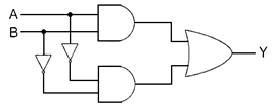
- 일치 회로
- 시프트 회로
- 카운터 회로
- 다수결 회로
(정답률: 75%)
2과목: 무선통신 기기
21. 페이딩을 방지하기 위하여 동일한 통신정보를 여러 개의 주파수에 실어서 전송하는 다이버시티 방식은 무엇인가?
- 공간 다이버시티
- 편파 다이버시티
- 주파수 다이버시티
- 시간 다이버시티
(정답률: 86%)
22. 다음 중 고조파의 방지 대책이 아닌 것은?
- 출력 증폭기로 Push-Pull 증폭기를 사용한다.
- 양극 동조 회로의 실효 Q를 높게한다.
- 여진(Bias) 전압을 깊게 걸지 않는다.
- 고조파에 대해 밀결합한다.
(정답률: 77%)
23. 다음 중 수신기에서 고주파 증폭회로의 역할로 적합하지 않은 것은?
- 수신기의 감도 개선
- 불필요한 전파발사 억제
- 근접주파수 선택도 개선
- 안테나와의 정합 용이
(정답률: 59%)
24. 다음 중 레이다 기술에 대한 설명으로 틀린 것은?
- 야간이나 시계가 불량한 경우 레이다를 사용하면 안전한 항해를 할 수 있다.
- 거리와 방위를 구할 수 있으므로 목표물의 위치 및 상대속도 등을 구할 수 있다.
- 특수레이다의 경우 열대성 폭풍(태풍)의 위치와 강우의 이동 파악 등 다양한 용도로 사용할 수 있다.
- 기상조건에 영향을 많이 받으므로 주로 가시거리 내에서 사용된다.
(정답률: 87%)
25. 다음 중 슈퍼헤테로다인 수신기에서 주파수 변환부의 구성 부분이 아닌 것은?
- 주파수혼합기
- 국부발진기
- 검파기
- BPF
(정답률: 50%)
26. 다음 중 DSB(Double Side Band) 방식에 비하여 SSB(Single Side Band) 방식의 장점으로 틀린 것은?
- 송신기의 소비전력이 약 30[%] 정도 줄어든다.
- 선택성 페이딩의 영향이 6[dB] 정도 개선된다.
- SNR 개선이 첨두 전력과 같을 때 약 12[dB] 정도 개선된다.
- 대역폭이 축소되어 주파수 이용률이 개선된다.
(정답률: 68%)
27. 진폭변조로 인해 반송파 양쪽에 생기는 주파수 성분 중 반송파보다 낮은 주파수 성분을 무엇이라고 하는가?
- 상측파
- 하측파
- 우측파
- 좌측파
(정답률: 86%)
28. 다음 중 펄스식 레이다를 널리 사용하는 이유가 아닌 것은?
- 출력의 능률을 올릴 수 있다.
- 저주파로 이용할 수 있기 때문이다.
- 예민한 빔을 얻을 수 있어 방위 분해능을 높게 할 수 있다.
- 송신 펄스의 유지 시간 내에 반사 펄스를 수신할 수 있어 상호 간섭이 없다.
(정답률: 67%)
29. 다음 중 FM 수신기의 특징으로 틀린 것은?
- 진폭제한 회로가 있어 S/N 비가 개선된다.
- 주파수 변별기로 변조한다.
- 소비전력이 적고 선택도가 우수하다.
- 수신 전계의 변동이 심한 이동 무선에 적합하다.
(정답률: 52%)
30. 수신기의 전기적 성능 중 수신기에 일정 주파수 및 일정 진폭의 희망파를 가할 때, 재조정하지 않고 오랜 시간동안 일정 출력을 얻을 수 있는가를 나타내는 지수는?
- 감도
- 안정도
- 충실도
- 선택도
(정답률: 79%)
31. 다음 변조신호 스펙트럼 중 전력효율이 가장 좋은 SSB 신호에 해당 하는 것은?
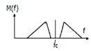
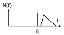
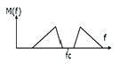
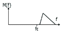
(정답률: 64%)
32. 정류회로의 맥동률을 나타낸 식으로 옳은 것은?
- γ = (리플성분의 실효값) / 직류전압
- γ = (리플성분의 평균값) / 직류전압
- γ = (리플성분의 실효값) / 교류전압
- γ = (리플성분의 평균값) / 교류전압
(정답률: 65%)
33. 다음 중 UPS(Uninterruptible Power Supply)의 구성요소에 속하지 않는 것은?
- 출력 필터부
- 증폭부
- 비상 바이패스부
- Static 스위치부
(정답률: 76%)
34. 전원회로에서 일반적으로 최대 출력 전류를 얻기 위한 방법으로 적합한 것은?
- 전원 내부 저항보다 부하 저항이 커야 한다.
- 전원 내부 저항보다 부하 저항이 작아야 한다.
- 전원 내부 저항과 부하 저항이 같아야 한다.
- 전원 내부 저항이 0 이어야 한다.
(정답률: 65%)
35. 다음 중 납 축전지의 용량이 감소하는 원인이 아닌 것은?
- 전해액 비중 과소
- 극판의 만곡 및 균열
- 충방전 전류의 과다
- 백색 황산연의 제거
(정답률: 86%)
36. 무선 수신기에 수신되는 신호 중 원하는 신호를 골라내는 능력에 해당하는 것은?
- 선택도
- 이득
- 잡음
- 감도
(정답률: 87%)
37. 송신전력 10[W]는 몇 [dBm]인가? (단, 송신전력이 1[mW]일 때 0[dBm]이다.)
- 40[dBm]
- 60[dBm]
- 80[dBm]
- 100[dBm]
(정답률: 70%)
38. 어떤 선로의 출력을 개방시키고 입력 임피던스를 측정하였더니 Z1 이고, 출력을 단락시키고 입력 임피던스를 측정하였더니 Z2 일 때 이 선로의 특성 임피던스는?
- Z1Z2
- Z2/Z1
- Z1/Z2
- (Z1Z2)1/2
(정답률: 72%)
39. 송신기에 안테나 대신 16[Ω]의 무유도 저항을 연결한 후, 측정한 전류값이 5[A]일 경우 송신기의 출력 값은 얼마인가?
- 300[W]
- 400[W]
- 500[W]
- 600[W]
(정답률: 82%)
40. 기전력이 2[V]인 2차 전지 60개를 직렬로 접속한 전원에서 20[A]의 방전전류를 얻고자 한다. 전원단자의 전압은 몇 [V]가 되는가? (단, 2차 전지 1개당 내부저항은 0.01[Ω]이다.)
- 108[V]
- 110[V]
- 112[V]
- 114[V]
(정답률: 72%)
3과목: 안테나 공학
41. 다음 중 거리에 따라 감쇠가 가장 급격하게 발생하는 것은?
- 정전계
- 유도계
- 복사전계
- 복사자계
(정답률: 78%)
42. 비유전율이 25이고, 비투자율이 1인 매질 내를 전파하는 전자파의 속도는 자유공간을 전파할 때와 비교하여 약 몇 배의 속도인가?
- 0.1배
- 0.2배
- 0.3배
- 0.5배
(정답률: 75%)
43. 자유공간에서 단위 면적당 단위 시간에 통과하는 전자파 에너지가 3[W/m2]일 경우 전계강도는 약 얼마인가?
- 8.45[V/m]
- 16.81[V/m]
- 33.63[V/m]
- 45.65[V/m]
(정답률: 72%)
44. 다음 그림과 같이 부하 임피던스가 ZL인 선로에 소자를 연결하였더니 임피던스가 점 A에서 점 B로 이동하였다. 이 소자의 연결을 올바르게 나타낸 것은?(오류 신고가 접수된 문제입니다. 반드시 정답과 해설을 확인하시기 바랍니다.)
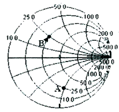
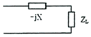
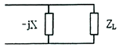
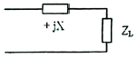
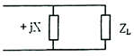
(정답률: 57%)
45. 공기로 채운 슬롯(Slot)선로에서 정재파비(VSWR)가 4이고, 연속적인 전압의 최대값 사이가 15[cm]의 간격이다. 최초의 전압 최대값은 부하로부터 7.5[cm] 앞에서 존재한다. 선로의 임피던스가 300[Ω]일 때 부하 임피던스는?
- 60[Ω]
- 65[Ω]
- 70[Ω]
- 75[Ω]
(정답률: 69%)
46. 선로1과 선로 2의 결합부분에서 반사계수가 0.25이다. 이때 선로 1의 길이는 15[m]이고 0.3[dB/m]의 손실을 가지며, 선로 2의 길이는 10[m]이고 0.2[dB/m]의 손실을 가진다고 하면 결합부분에서의 총 손실은 약 [dB]인가?
- 6.2[dB]
- 6.4[dB]
- 6.6[dB]
- 6.8[dB]
(정답률: 52%)
47. 전송선로의 특성 임피던스 Zo=50-j15[Ω] 이고, 이 전송선로에 부하 임피던스 ZL=30+j60[Ω]가 연결되었을 때, 선로의 전압 정재파비(VSWR)는 약 얼마인가?
- 12
- 14
- 16
- 18
(정답률: 44%)
48. 안테나의 급전점 임피던스가 75[Ω]인 반파장 안테나와 특성 임피던스가 600[Ω]인 평행2선식 선로를 λ/4 임피던스 변환기로서 정합시키고자 할 때, 이 변환기의 특성 임피던스는 약 얼마인가?
- 112[Ω]
- 212[Ω]
- 312[Ω]
- 412[Ω]
(정답률: 73%)
49. 다음 로딩(Loading) 다이폴안테나에 대한 설명에서 괄호 안에 맞는 말을 순서대로 배열한 것은?
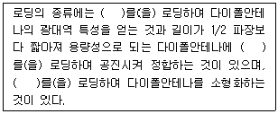
- 저항-인덕터-커패시터
- 인덕터-커패시터-저항
- 커패시터-저항-인덕터
- 커패시터-인덕터-저항
(정답률: 75%)
50. 다음 중 극초단파대용 안테나는?
- Whip안테나
- Slot안테나
- Adcock안테나
- Beam안테나
(정답률: 63%)
51. 다음 중 Corner Reflector 안테나에 대한 설명으로 틀린 것은?
- 지향성은 반사기 면적, 다이폴의 위치에 따라 다르다.
- 각도 θ와 영상수 N의 관계는
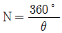
가 되고, 반치각은 약 60° 이다. - 구조가 간단하고 이득이 높아 전후방비가 좋으며, 병렬접속이 용이하다.
- 100[MHz] ~ 1,000[MHz]대의 고정통신용으로 주로 사용된다.
(정답률: 68%)
52. 장·중파대의 송신안테나 중 수분이 많고 대지의 도전율이 양호한 경우에 사용하고 소전력의 송신 안테나에 사용되는 가장 적합한 접지방식은?
- 다중 접지
- 심굴 접지
- 가상 접지
- 방사상 접지
(정답률: 80%)
53. 다음 중 마이크로파 대역에서 안테나의 복사패턴 측정 시 주로 이용되는 패턴은?
- 전계 패턴
- 위상 패턴
- 자계 패턴
- 전력 패턴
(정답률: 49%)
54. 다음 중 방사상 접지에 대한 설명으로 틀린 것은?
- 지중 동판식이라고도 한다.
- 정비 저항은 약 5[Ω] 정도이다.
- 중파 방송용 안테나에 주로 사용된다.
- 여러 동선을 안테나를 중심으로 방사형으로 땅속에 매설한다.
(정답률: 72%)
55. 태양 표면의 폭발로 인하여 20[MHz] 이상의 높은 주파수에서 전파 장해가 심하게 나타나며 위도가 높은 지방일수록 영향이 더 큰 것은 어떤 현상 때문인가?
- 자기 폭풍(Magnetic Storm)
- 델린저 현상(Delinger Phenomenon)
- 코로나 손실(Corona Loss)
- 룩셈부르크 효과(Luxemburg Effect)
(정답률: 80%)
56. 다음 중 EMS(ElectroMagnetic Susceptibility) 용어에 대한 설명으로 가장 적합한 것은?
- 안체, 기자재, 무선설비 등을 둘러싸고 있는 전파의 세기, 잡음 등 전자파의 총체적인 분포 상황이다.
- 어떤 기기에 대해 전자파 방사 또는 전자파 전도에 의한 영향으로부터 정상적으로 동작할 수 있는 능력으로 전자파로부터의 보호라고도 한다.
- 전자파장해를 일으키는 기자재나 전자파로부터 영향을 받는 기자재가 전자파장해 방지기준 및 부호기준에 적합한 것으로 전자파를 주는 측과 받는 측의 양쪽에 적용하여 성능을 확보할 수 있는 기기의 능력이다.
- 전자파를 발생시키는 기자재로부터 전자파가 방사(放射: 전자파 에너지가 공간으로 퍼져나가는 것을 말한다) 또는 전도[전도 : 전자파에너지가 전원선(電源線)을 통하여 흐르는 것을 말한다]되어 다른 기자재의 성능에 장해를 주는 것이다.
(정답률: 54%)
57. 다음 중 전리층의 주간 및 야간의 변화에 대한 설명으로 틀린 것은?
- D층은 야간에 장파대의 전파를 반사시킬 수 있다.
- E층은 주간에 약 10[MHz]의 단파를 반사시킬 수 있다.
- F층은 단파대의 전파를 반사시키 수 있다.
- Es층은 80[MHz]정도의 초단파를 반사시킬 수 있다.
(정답률: 71%)
58. 지구 표면에서 상공으로 펄스파를 발사한 후, 0.8[ms] 후에 그 반사파를 수신하였다. 어느 전리층일까?
- D층
- E층
- F1층
- F2층
(정답률: 67%)
59. 다음 중 지표파에서 가장 손실이 적어 원거리까지 도달할 수 있는 경우는?
- 수직편파를 사용하여 해상을 전파할 때
- 수평편파를 사용하여 해상을 전파할 때
- 수직편파를 사용하여 평야를 전파할 때
- 수평편파를 사용하여 평야를 전파할 때
(정답률: 70%)
60. 다음 중 자연잡음인 공전 잡음을 효과적으로 방지하기 위한 대책이 아닌 것은?
- 지향성 안테나 사용
- 수신기의 수신대역폭을 넓히고 선택도를 개선
- 송신 출력을 높여 수신 S/N비를 증대
- 비접지 안테나 사용
(정답률: 73%)
4과목: 무선통신 시스템
61. DS(Direct Sequence)대역확산 통신방식에서 정보율(Bit Rate)과 PN부호율(Chip Rate)이 같다면 처리이득은 몇 [dB]인가?
- 0[dB]
- 1[dB]
- 10[dB]
- 20[dB]
(정답률: 71%)
62. 다음의 변조방식 중 디지털 변조 방식이 아닌 것은?
- FSK
- PSK
- AM/FM
- DPSK
(정답률: 84%)
63. 다음 중 대역 확산 통신의 정의를 맞게 설명 한 것은?
- 정보 데이터 신호의 주파수 대역폭보다 넓은 대역폭을 갖는 코드를 사용해서 대역 확산 후 전송하는 방식
- 정보 데이터 신호의 주파수 대역폭보다 좁은 대역폭을 갖는 코드를 사용해서 대역 확산 전 전송하는 방식
- 정보 데이터 신호의 주파수 대역폭보다 넓은 대역폭을 갖는 코드를 사용해서 대역 확산 전 전송하는 방식
- 정보 데이터 신호의 주파수 대역폭보다 좁은 대역폭을 갖는 코드를 사용해서 대역 확산 후 전송하는 방식
(정답률: 71%)
64. 다음 보기는 무엇에 대한 설명인가?
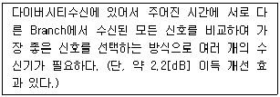
- 최대비 합성법 (Maximum Ratio Combining)
- 선택 합성법 (Selective Combining)
- 동 이득 합성법 (Equal Gain Combining)
- CSMA/CD (Carrier Sense Multiple Access with Collision Detection)
(정답률: 70%)
65. 대역확산 통신시스템에서 기준 신호와 입력신호의 시간 차이가 일정수준 이상일 경우, Correlation 진폭이 0(Zero)이 되어 동기추적을 할 수 없다. 이때 동기추적이 불가능한 최소한의 값은 얼마인가?
- 5Chip
- 2Chip
- 1Chip
- 0.5Chip
(정답률: 66%)
66. 다음 중 위성 통신의 특성이 아닌 것은?
- 지상 재해의 영향을 받지 않는다.
- 전송 지연이 없고 반향 효과가 적은 장점이 있다.
- 원거리 멀티포인트 통신이 가능하다.
- 대용량 전송 및 고속 통신이 가능하다.
(정답률: 75%)
67. 다음 중 마이크로파 통신 방식의 일반적인 특성이 아닌 것은?
- 가시거리 통신이다.
- 광대역 통신이 가능하다.
- 외부 잡음의 영향이 적다.
- 전리층 반사파를 이용하여 전파한다.
(정답률: 61%)
68. 이동전화망에서 단말기가 한 셀에서 다른 셀로 이동할 때 통신하던 기지국과의 통신을 끊고 새로운 기지국과 통신을 시작하게 되는데, 이런 상황을 무엇이라고 하는가?
- 전력제어
- 핸드오프
- 페이딩 현상
- 도플러 현상
(정답률: 84%)
69. 다음 중 레이다의 탐지 거리를 결정하는 요인이 아닌 것은?
- 유효 반사 면적이 큰 목표일수록 멀리 탐지된다.
- 레이다 송신기 출력의 2승근에 비례하여 멀리 탐지된다.
- 출력 및 수신감도를 올리면 탐지거리가 증대된다.
- 이득이 큰 안테나를 사용하고 짧은 파장을 사용한다.
(정답률: 74%)
70. 건물의 뒤편 또는 산 뒤에서와 같이 기지국 안테나로부터 가려진 곳까지 전파가 도달하여 통화가 가능한 것은 전파의 어떤 성질 때문인가?
- 회절
- 투과
- 굴절
- 산란
(정답률: 78%)
71. 다음 중 마이크로파 다중 통신 시스템의 중계 방식이 아닌 것은?
- 직접 중계 방식
- 간접 중계 방식
- 검파 중계 방식
- 헤테로다인 중계 방식
(정답률: 52%)
72. 우리나라의 LTE 이동통신시스템에서 기지국과 단말국간이 상향/하향 신호 전송 방식과 Duplex 방식으로 각각 옳은 것은?
- TDD - Half Duplex
- FDD - Half Duplex
- TDD - Full Duplex
- FDD - Full Duplex
(정답률: 63%)
73. 통신 프로토콜이란 통신을 위하여 약속된 절차이 집합이다. 다음 중 계층과 기능이 다른 것은?
- 물리계층 - 통신회선의 종류
- 네트워크 - 통신 경로 결정
- 응용계층 - 시스템의 관리
- 세션 - 데이터의 변환
(정답률: 55%)
74. 다음 설명의 빈 칸에 들어갈 적당한 말은 무엇인가?
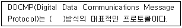
- 문자
- 비트
- 부호
- 바이트
(정답률: 53%)
75. 다음 중 인터넷에 접속할 수 있는 새로운 단말기기를 개발하는 경우 단말기 특성을 반영해서 반드시 개발해야 하는 최소한의 프로토콜(Protocol) 계층은 무엇인가?
- 트랜스포트층
- 데이터링크층
- 네트워크층
- 애플리케이션층
(정답률: 75%)
76. 프로토콜에 대한 다음 설명 중 빈칸( )에 적합한 것은?
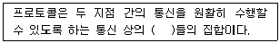
- 규약
- 링크
- 요소
- 기능
(정답률: 83%)
77. 전파가 자유공간에서 전파할 때 거리가 2배로 증가하면 손실은 약 얼마나 증가하는가?
- 2[dB]
- 3[dB]
- 6[dB]
- 9[dB]
(정답률: 73%)
78. 다음 중 무선통신시스템의 설계 계획 시 요구되는 시스템의 암호화 도입 방식이 아닌 것은?
- 링크 대 링크(Link-by-Link)방식
- 트리 대 트리(Tree-by-Tree)방식
- 엔드 대 엔드(End-by-End)방식
- 노드 대 노드(Node-by-Node)방식
(정답률: 79%)
79. 통신망시스템이 고장이 난 시점부터 수리가 완료되는 시점까지의 평균시간을 의미하는 것을 무엇이라 하는가?
- MTTF(Mean Time To Failure)
- MTTR(Mean Time To Repair)
- MTBF(Mean Time Between Failure)
- MTBSI(Mean Time Between System Incident)
(정답률: 84%)
80. 다음 설명에서 정의하는 전자파 장해는?
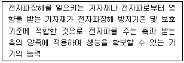
- 전자파적합(EMC)
- 전자파장해(EMI)
- 전자파내성(EMS)
- 전자파 흡수율(SAR)
(정답률: 67%)
5과목: 전자계산기 일반 및 무선설비기준
81. 다음 운영체제의 방식 중 가장 먼저 사용된 방식은?
- Batch Processing
- Time Slicing
- Multi-Threading
- Multi-Tasking
(정답률: 71%)
82. 32비트의 데이터에서 단일 비트 오류를 정정하려고 한다. 해밍 오류 정정 코드(Hamming Error Correction Code)를 사용한다면 몇 개의 검사 비트들이 필요한가?
- 4비트
- 5비트
- 6비트
- 7비트
(정답률: 59%)
83. 다음의 데이터 코드 중 가중치 코드가 아닌 것은?
- 8421 코드
- 바이퀴너리(Biquinary) 코드
- 그레이(Gray)코드
- 링 카운터(Ring Counter)코드
(정답률: 75%)
84. 다음 중 운영체제에 대한 설명으로 틀린 것은?
- 유닉스(Unix) : 네트워크 기능이 강력하며, 다중 사용자 지원이 가능하고, PC에서도 설치 및 운용이 가능한 버전이 있다.
- 리눅스(Linux) : 무료로 다운받아 모든 분야에 무료로 널리 사용할수 있으며, 윈도우즈와 동일한 환경을 제공한다.
- 윈도우즈(Windows) : 소스가 공개되어 있지 않으며, 많은 사용자들이 보편적으로 사용하고 있다. 서버급 보다는 클라이언트용으로 주로 사용되고 있다.
- 도스(Dos) : 명령어 입력방식으로 불편하며, DOS지원을 위해 메모리와 디스크의 용량에 한계가 있다. 여러 사람이 작업을 할 수 없다.
(정답률: 81%)
85. 유일 키를 갖는 자료 1,000개가 키에 의해 오름차순으로 정렬되어 있다. 이진탐색(Binary Search) 방법으로 원하는 자료를 찾고자 할 경우 최대 몇 번의 키 비교를 해야 하는가?
- 5번
- 10번
- 500번
- 1,000번
(정답률: 70%)
86. 다음 중 선택된 트랜(Track)에서 데이터(Data)를 Read 또는 Write하는데 걸리는 시간은?
- Seek Time
- Search Time
- Transfer Time
- Latency Time
(정답률: 55%)
87. 다음 보기의 기억장치 중 속도가 가장 빠른 것에서 느른 순서대로 나열한 것으로 맞는 것은?
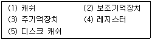
- (4)-(3)-(1)-(5)-(2)
- (4)-(5)-(3)-(1)-(2)
- (4)-(1)-(3)-(5)-(2)
- (4)-(5)-(1)-(3)-(2)
(정답률: 73%)
88. 다음 중 자기보수 코드(Self Complement Code)인 것은?
- 3초과 코드
- BCD 코드
- 그레이 코드
- 해밍 코드
(정답률: 61%)
89. 메모리에 접근하지 않아 실행 사이클이 짧아지고, 명령어에 사용될 데이터가 오퍼랜드(Operand) 자체로 연산 대상이 되는 주소지정방식은?
- 베이스 레지스터 주소지정 방식(Base Register Addressing Mode)
- 인덱스 주소지정 방식(Index Addressing Mode)
- 즉시 주소지정 방식(Immediate Addressing Mode)
- 묵시적 주소지정 방식(Implied Addressing Mode)
(정답률: 76%)
90. 2진수 7비트로 표현하는 경우 -9에 대해 부호화 절대값, 부호화 1의 보수 및 부호화 2의 보수로 변환한 것으로 옳은 것은?
- 0001001, 0110110, 0110111
- 1001001, 0110110, 1110111
- 1001001, 1110110, 1110111
- 1001001, 0110110, 0110111
(정답률: 67%)
91. “무선설비”라 함은 전파를 보내거나 받는 ( )을(를) 말한다. 괄호 안에 들어갈 적합한 말은?
- 송수신설비
- 무선전신 무선전화 설비
- 통신시설
- 전기적 시설
(정답률: 56%)
92. 전파형식의 표시 “16K0G3EJN"에서 기호 및 문자의 설명으로 틀린 것은?
- 16K0은 필요주파수대역폭을 나타냄.
- G는 주반송파가 위상변조된 발사전파를 나타냄.
- 3은 주반송파를 변조시키는 신호특성이 아날로그정보를 포함하는 단일채널을 나타냄.
- E는 송신할 정보의 전신 형태를 나타냄.
(정답률: 55%)
93. 해상이동업무 또는 해상무선항행업무에서 R3E전파를 사용하는 경우에 할당주파수 표시는?
- 반송주파수보다 1,400[Hz] 높은 주파수
- 반송주파수보다 1,100[Hz] 높은 주파수
- 반송주파수보다 1,000[Hz] 높은 주파수
- 반송주파수보다 500[Hz] 높은 주파수
(정답률: 52%)
94. 다음 중 무선국 시설자 등이 준수하여야 할 통신보안에 관한 사항으로 틀린 것은?
- 통신보안교육 등에 관한 사항
- 통신보안책임자의 지정에 관한 사항
- 통신 시 기록할 통신내용에 관한 사항
- 무선국 허가 시 통신보안 조치에 관한 사항
(정답률: 67%)
95. 선박 운항 해역을 4가지로 구분하는데 다음 중 A2 해역이라 함은 어떤 것을 의미하는가?
- 디지털선택호출경보를 이용할 수 있는 최소한 하나의 초단파대 해안국의 무선전화 통신범위안의 해역
- 디지털선택호출경보를 이용할 수 있는 최소한 하나의 중단파대 해안국의 무선전화 통신범위안의 해역으로 A1해역을 제외한 해역
- 국제이동위성기구의 위성통신권 범위안의 해역
- A1해역을 포함한 해역
(정답률: 75%)
96. 송신설비의 전력은 주로 무엇으로 표시하는가?
- 안테나이득
- 반송파전력
- 안테나공급전력
- 평균전력
(정답률: 58%)
97. 다음 문장의 괄호 안에 들어갈 내용으로 가장 적합한 것은?
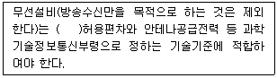
- 전압
- 주파수
- 전류
- 저항
(정답률: 82%)
98. 수신설비로부터 부차적으로 발사되는 전파의 세기는 몇[dBmW]이하이어야 하는가? (단, 수신안테나와 전기적 상수가 같은 시험용 안테나회로를 사용하여 측정한 경우이다.)
- -24[dBmW]
- -34[dBmW]
- -44[dBmW]
- -54[dBmW]
(정답률: 54%)
99. 적합인증, 적합등록, 적합성평가의 변경신고 업무를 과학기술정보통신부장관으로부터 업무 권한을 위임 받은 자는?
- 한국방송통신전파진흥원장
- 중앙전파관리소장
- 국립전파연구원장
- 기술표준원장
(정답률: 60%)
100. 송신설비의 전력을 규격전력으로 표시하는 경우가 아닌 것은? (문제 오류로 실제 시험에서는 3,4번이 정답처리 되었습니다. 여기서는 3번을 누르면 정답 처리 됩니다.)
- 생존정에 사용되는 비상용의 무선설비
- 아마추어국의 송신설비
- 실험국의 송신설비
- 라디오부이의 송신설비
(정답률: 76%)